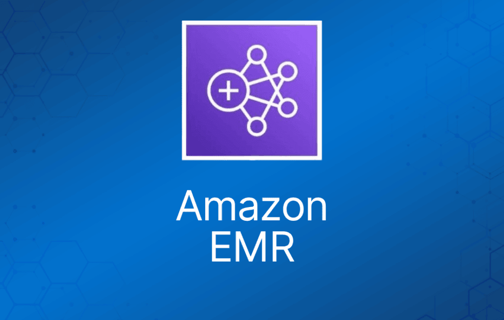

Amazon EMR 是一项 Web 服务，让企业、研究人员、数据分析师和开发者能够处理海量数据。
EMR 利用运行在 Amazon EC2 和 Amazon S3 之上的托管 Hadoop 框架。
使用 EMR，你可以以不到传统本地解决方案一半的成本运行 PB 级分析，速度比标准 Apache Spark 快 3 倍以上。
你可以在 Amazon EC2 实例上、Amazon Elastic Kubernetes Service (EKS) 集群上运行工作负载，也可以通过 EMR on AWS Outposts 在本地运行。
运行在 Amazon VPC 内的一个可用区中。
支持 Apache Spark、HBase、Presto 和 Flink。
最常用于日志分析、金融分析，或提取、转换和加载（ETL）作业。
Step（步骤）是对数据执行某种处理的程序化任务（例如统计词频）。
集群（cluster）是 EMR 为运行你的 Step 而预置的一组 EC2 实例。
EMR 是部署 Apache Spark 的好地方，Apache Spark 是用于大数据工作负载的开源分布式处理框架，利用内存缓存和优化的查询执行。
你也可以启动 Presto 集群。Presto 是开源的分布式 SQL 查询引擎，专为对大数据集进行快速分析查询而设计。
EMR 会在同一个 Amazon EC2 可用区中启动给定集群的所有节点。
你可以通过 AWS Management Console、命令行工具、SDK 或 EMR API 访问 Amazon EMR。
使用 EMR 时你可以访问底层操作系统（可以通过 SSH 登录）。